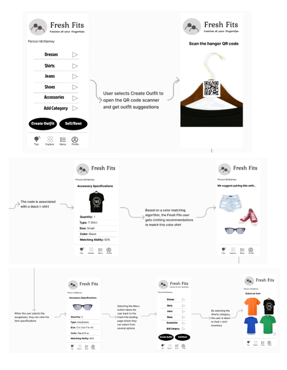

Thu Tran
MT Engineer II – Dupont Vespel® Pencader
Hobbies: Family, Travel, Photography, Reading, Swimming
FreshFits - Smart Wardrobe
Fresh Fits is an innovative user interface (UI) that offers a hassle-free way of managing your wardrobe. Unlike traditional screen-based interfaces, Fresh Fits seamlessly blends physical and digital elements, providing you with a more efficient and intuitive user experience. Say goodbye to the cluttered closet and hello to a smarter way of organizing your clothes with Fresh Fits.
Key features include:
- QR Codes on Hangers: Each article of clothing is linked to a unique QR code on its respective hanger. This innovation simplifies the process of cataloging and organizing clothes.
- Scan Gun Technology: Fresh Fits comes equipped with a handy scan gun that effortlessly scans the QR codes on clothing hangers. This process ensures accurate and quick input into the digital inventory.
- Portable Tablet/Monitor: A small, portable tablet/monitor accompanies the system, providing users with real-time access to their clothing inventory. This device enables users to monitor, update, and interact with their wardrobe on the go or in the comfort of their home.
- Smart Matching: Fresh Fit App offers a smart system to generate the daily outfit based on weather conditions, color scheme and inventory management. It makes your daily life more interesting and reduces wasting time for mix and match clothing.
- Shopping: Fresh Fit App includes some favorite retail branches you like to shop such as Amazon, Macys, Zara, Uniqlo. Our app also collects the new outfit to compare with the inventory system. It will provide the percentage matching outfit in your wardrobe inventory.
- Dressup game: Fresh Fit App provides a game for mixing and matching daily outfit based on your inventory.
- Social Integrations: Connecting with friends, family, and new contacts has never been easier. Fresh Fit provides quick and easy functionality to share wardrobe styles anytime, anywhere.
FreshFits App User Interface
The FreshFits app features a user-friendly interface that allows the sorting of clothing by several categories. There are three main categories such as inventory management, outfit matching and social integration.
Inventory Management
FreshFits uses new high-end technology such as QR code and scan gun to make an impressive inventory management. We separate the wardrobe category such as:
- Type: Categorize clothes by type, such as shirts, pants, dresses, and accessories.
- Color: Easily organize clothes by color, simplifying the process of finding matching items.
- Size: Keep track of sizes for quick reference during shopping or outfit planning.
- Quantity: Manage the quantity of each item, aiding in identifying potential gaps in the wardrobe.
- Suggestion: goes beyond wardrobe management and offers personalized outfit suggestions. By analyzing the user's clothing inventory based on type, color, and style, the app provides tailored recommendations for creating stylish outfits from existing items.
Fresh Fits provides a user-friendly interface that combines simplicity with an intuitive and visually pleasing clothing browsing experience. The application design is clean and intuitive, making it easy for users to navigate through their clothing inventory. The categorization options, including shirts, jeans, shoes, and dresses are prominently displayed for users to quickly sort and filter their wardrobe. In addition, each item is uniquely linked to a Fresh Fits hanger QR code so the article of clothing can be categorized based on type, color, matching potential, size, and quantity. Smaller items such as shoes and accessories can also be paired with QR clips for itemization. Accessory details are displayed on the mobile application and portable tablet/monitor, fostering a seamless interaction between the physical and digital aspects of the wardrobe. This makes the process of curating outfits and swapping fashion items with friends an engaging and visually satisfying experience.
Below is an example of the average user’s experience using Fresh Fits. By selecting “Create Outfit” the user can scan the hanger QR code of their choice to view the item on the application. Then, the user can search for “Tips” to get recommendations on what pairs well with the clothing item. All items on the recommendation tab are interactive so the user can select it to see item details and the matching compatibility percentage.
Outfit Matching
According to our workflow figure #, FreshFits app develop some smart tools to give you more suggestions for mixing and matching daily outfit such as:
- Search Tool: It helps to search outfit in the inventory management. When using this tool, the user can access all outfits and get the outfit they want quickly.
- Smart Matching: The system intelligently suggests outfits by considering the current time, current temperature to get the color scheme for the outfit. When user picks this function, the system will automatically load current date to analyze the season such as Spring, summer, fall and winter. The current time will provide the day or night event. And then, the system will automatically load the weather API to get the temperature range such as 0 – 30 Fahrenheit degree; 31 – 60 Fahrenheit degree and 61 – 90 above Fahrenheit degree. The system also arranges the color scheme based on season, day/night event and temperature range. The system will load the outfit type in inventory system based on the machine learning system.
- Shopping: The system will link to favorite branch you always visit such as Amazon, Zara, Uniqlo. It will support the web browser to access easily and catch the outfit information. Our smart matching system will compare with the inventory management system to get the matching.
- Dress up Game: The system will develop a game to mix and match daily outfit based on inventory management. The user can play the game to choose what type of event they are going to participate such as daily work, night party, wedding, birthday. Next step, the user can choose they type of cloth they want such as dress, top, bottom, coat, accessories, bag. The system will match with inventory and return the outfit.
Social Integration
FreshFits enhances the social aspect of fashion by allowing users to connect with friends. The application features a contacts list where users can swap clothes with close friends or individuals nearby. This not only promotes sustainable fashion practices but also adds a fun and collaborative element to the wardrobe management experience. Users will be able to share via the following methods:
- Nearby: Using a QR code system allows for passersby who may be discussing about their fashion interests to quickly share their wardrobe with each other
- Via Contact: Have a friend or family member that you want to see the latest combinations you bought? This system allows an easy way to share an outfit or an entire wardrobe to another person.
- Via social media: Want to share with your followers on a particular service? This functionality provides an easy way to share to Facebook, Instagram, and Snapchat.